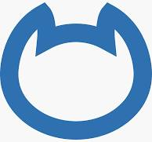

Identify open ports, services, and vulnerabilities with these powerful scanning tools. The second phase of ethical hacking involves active probing of target systems to discover weaknesses.
Scanning involves actively probing target systems to identify open ports, running services, and potential vulnerabilities. This phase builds on reconnaissance data to map out attack surfaces.
Identifies live hosts, open ports, and services running on target systems (Nmap, Nessus).
Detects known vulnerabilities in systems and applications (OpenVAS, Nikto).

Network mapper for host discovery and service enumeration. The most popular port scanner in cybersecurity.
A powerful vulnerability assessment tool used to identify security issues, misconfigurations, and weaknesses in networks and systems.
An open-source vulnerability scanning framework for detecting security issues, misconfigurations, and known vulnerabilities in networked systems.
A web server vulnerability scanner that performs comprehensive tests for dangerous files, outdated server software, and other security issues.
An ultra-fast TCP port scanner capable of scanning the entire Internet in minutes. Ideal for high-speed reconnaissance.

A lightweight networking tool used for reading, writing, and creating TCP/UDP connections. Ideal for debugging, reverse shells, and file transfers.
A packet crafting tool used for network scanning, firewall testing, and DoS simulation. Useful for analyzing TCP/IP stack behavior.
A lightning-fast, command-line network scanner for Internet-wide port scanning. Optimized for speed and scalability.
A traceroute implementation that uses TCP packets instead of ICMP/UDP, allowing route tracing through firewalls and filtered networks.
A powerful Perl script for DNS enumeration. Helps discover subdomains, name servers, zone transfers, and more.
Website fingerprinting tool that detects technologies used by a web server, including CMS, frameworks, analytics, and plugins.
A high-speed web application scanner designed to map and assess vulnerabilities through recursive crawling and fuzzing.
A web vulnerability scanner that audits websites by injecting payloads to identify flaws such as XSS, SQLi, and file disclosure.
A simple and fast web content scanner that uses a wordlist to brute-force directories and files on web servers.
A network scanner designed to identify applications and services running on open ports, even when the services use non-standard ports.